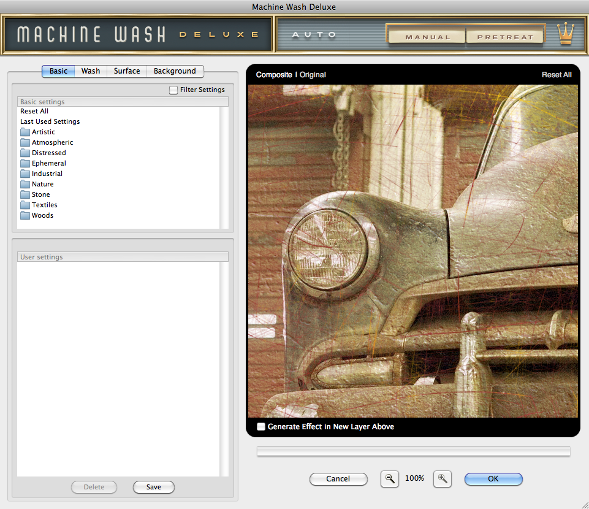

Let's Learn About Machine Wash Deluxe
User Interface
Machine Wash Deluxe features four different tabbed sections of the GUI interface to create and fine-tune the plug-in effects. Below we'll discuss an overview of the filter and details about each tabbed section.
After successful plug-in installation, to start, load any image in 8-Bit RGB or CMYK mode into Adobe Photoshop or compatibles and launch the Machine Wash Deluxe plug-in from the following menubar location: Filter > Mister Retro > Machine Wash Deluxe*.
* The location to access the Machine Wash Deluxe plug-in may vary from application to application, consult your imaging application user manual for specific instructions how to access plug-in filters.
|  |
Once the plug-in has been successfully registered and launched, you'll see four tabbed sections on the upper left side of the GUI and a preview window on the right. The preview window features zoom controls beneath and OK and Cancel buttons to apply or cancel the effect with the current settings. Once you've adjusted the controls in each tabbed section and are satisfied with the results, click the OK button to apply the Machine Wash Deluxe effect to your image or click Cancel to close the plug-in and return to your host application leaving your original image unaffected.
Resizable Window - Should you wish to increase or decrease the size of the plug-in window, simply click and drag the lower right hand corner to the desired size you'd like to work with. Machine Wash Deluxe will remember your preferred size and it can be changed at any time.
Manual Button - You'll also notice across the top of the GUI are two buttons, Manual and Pretreat. If you would like to launch this manual at any time, simply click the Manual button. If at any time you need help with working with a specific tabbed section while using the plug-in, simply hit the F1 button on your keyboard to launch the manual page for that specific section.
Pretreat Button - Clicking the Pretreat button will launch your web browser and take you to our online Basic preset preview gallery. Here you can preview every Basic setting without the need to manually toggle through each locally.
Plug-in Notifications - Never worry about making sure you have the latest version of Machine Wash Deluxe or the newest presets. As we continue to enhance and improve Machine Wash Deluxe or add new presets, the plug-in will automatically notify you when new versions are available and direct you where they can be downloaded. When the Download Update alert is visible, simply click the Machine Wash Deluxe logo to launch the About dialog, then click the Get Upodates button to be taken to the download page to aquire the latest version.

About Dialog - Simply click on the Machine Wash Deluxe title in the upper left to launch the About dialog where you'll see your serial number and name, buttons to Get Updates, Synchronize your plug-in with our Registration Server and to disable or enable the Machine Wash Deluxe sound effects.
Auto Random Effect Generator - We know there are lots of effect options to apply to your image but if you just can't decide which ones to use, click on the Auto button located at the top of the plug-in to randomly load effects, you'll be amazed how fun and useful it is!
With so many controls to master, we're confident you'll be thrilled with the variety of visual effects you can create with Machine Wash Deluxe.